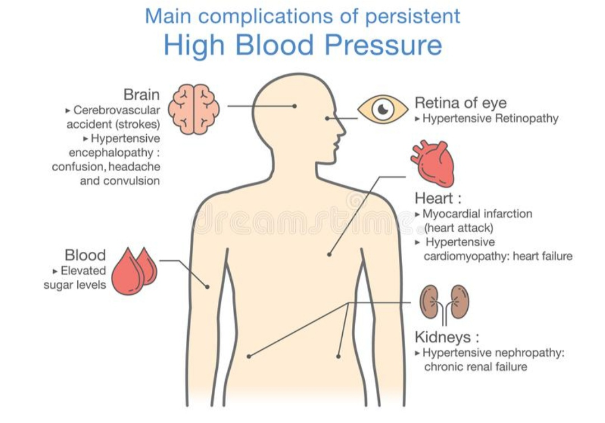

what is High Blood Pressure
High blood pressure (hypertension) is a common condition in which the long-term force of the blood against your artery walls is high enough that it may eventually cause health problems, such as heart disease.
Blood pressure is determined both by the amount of blood your heart pumps and the amount of resistance to blood flow in your arteries. The more blood your heart pumps and the narrower your arteries, the higher your blood pressure. A blood pressure reading is given in millimeters of mercury (mm Hg). It has two numbers.
-
Top number (systolic pressure).
The first, or upper, number measures the pressure in your arteries when your heart beats. -
Bottom number (diastolic pressure).
The second, or lower, number measures the pressure in your arteries between beats.
You can have high blood pressure for years without any symptoms. Uncontrolled high blood pressure increases your risk of serious health problems, including heart attack and stroke. Fortunately, high blood pressure can be easily detected. And once you know you have high blood pressure, you can work with your doctor to control it.
what causes for High Blood Pressure
Causes
-
Exact causes of high blood pressure are not known. Hypertension can be categorised into two types, each type has a different cause.
-
Primary hypertension (essential hypertension): This type of blood pressure usually takes many years to develop and probably is a result of lifestyle, environment, and age.
-
Lifestyle -sedentary lifestyle
-
Environment - poor diet, stress
-
Age - More common after 50 years of age
-
Secondary hypertension: High blood pressure caused due to health problem or certain medications.
-
Family history may increase the risk for primary hypertension.
-
High salt intake or salt sensitivity
-
Smoking
-
Overweight or obesity
-
Lack of physical activity
-
Too much of alcohol consumption
-
Stress
-
Age - above 50 years
-
Factors which may cause secondary hypertension include:
-
Diabetes
-
Kidney problems
-
Sleep apnoea
-
Thyroid or adrenal gland problems
-
Birth control pills
what are the health risks of High blood Pressure
Complications
The excessive pressure on your artery walls caused by high blood pressure can damage your blood vessels as well as your organs. The higher your blood pressure and the longer it goes uncontrolled, the greater the damage.
Uncontrolled high blood pressure can lead to complications including:
-
Heart attack or stroke.High blood pressure can cause hardening and thickening of the arteries (atherosclerosis), which can lead to a heart attack, stroke or other complications.
-
Aneurysm. Increased blood pressure can cause your blood vessels to weaken and bulge, forming an aneurysm. If an aneurysm ruptures, it can be life-threatening.
-
Heart failure. To pump blood against the higher pressure in your vessels, the heart has to work harder. This causes the walls of the heart's pumping chamber to thicken (left ventricular hypertrophy). Eventually, the thickened muscle may have a hard time pumping enough blood to meet your body's needs, which can lead to heart failure.
-
Weakened and narrowed blood vessels in your kidneys. This can prevent these organs from functioning normally.
-
Thickened, narrowed or torn blood vessels in the eyes. This can result in vision loss.
-
Metabolic syndrome. This syndrome is a group of disorders of your body's metabolism, including increased waist size, high triglycerides, decreased high-density lipoprotein (HDL) cholesterol (the "good" cholesterol), high blood pressure and high insulin levels. These conditions make you more likely to develop diabetes, heart disease and stroke.
-
Trouble with memory or understanding. Uncontrolled high blood pressure may also affect your ability to think, remember and learn. Trouble with memory or understanding concepts is more common in people with high blood pressure.
-
Dementia. Narrowed or blocked arteries can limit blood flow to the brain, leading to a certain type of dementia (vascular dementia). A stroke that interrupts blood flow to the brain also can cause vascular.
Diet plan
High Blood Pressure: Foods to Eat
A high blood pressure diet means, eating right which can be an easy and effective way of treating hypertension. Some healthy changes in your diet can help you prevent the complications of high blood pressure. By counting calories and watching portion sizes, you may be able to lessen the number of medications you take for controlling blood pressure.
Here are some changes that people with hypertension can make in their diet for the best result.
Eat Less Meat, More Plant
meat in high blood pressure
Meat is unhealthy for people with high blood pressure. It includes unhealthy fats and has higher calories. Whereas plant-based foods are filled with nutrients and fibers. Plant-based foods like vegetables and fruits can benefit in several ways. They help in losing weight, lowering cholesterol levels, and managing blood pressure. Therefore, in a high blood pressure diet, meat is excluded and plant-based foods are adopted.
One should also track how much they eat. Whole fruits, green vegetables, and whole grains reduce the sodium intake and saturated, trans fat intake as well.
Reduce Sodium (salt) Intake
A high sodium diet can increase blood pressure even more. People who take less sodium have better control of their blood pressure. People who have hypertension or are at risk of any heart disease need to keep their sodium intake between the range of 1500 to 2300 milligrams per day.
To track the sodium in your diet, you can consider the following things-
Avoid eating restaurant food or prepackaged, these usually contain a very high amount of sodium.
Take salt-free seasonings.
Write down what you eat in a day to track your sodium intake.
Read the daily value of every food package.
Avoid Sugary Foods
Sugary foods and beverages are full of flavored sugars with no nutritional value. If you are craving something sweet then try eating fresh fruits or dark chocolate in moderate amounts. Always read the sugar a certain food provides before buying it. A healthy blood sugar level helps in keeping the blood pressure in control.
Healthy Foods To Reduce High Blood Pressure
A healthy diet is necessary for keeping the blood pressure optimal. Researches have shown that including certain foods can help you lower blood pressure. Foods with specific nutrients like potassium, magnesium, and fibers can be considered high blood pressure diet foods.
Here is a list of some healthy food items you should include in high blood pressure diet:-
Apples
-
Apricots
-
Bananas
-
Beet greens
-
Broccoli
-
Carrots
-
Collards
-
Green beans
-
Dates
-
Grapes
-
Green peas
-
Yogurt (fat-free)
Foods To Eat Less
There are some foods that you should avoid or consume less. These are-
-
Butter and margarine.
-
Regular salad dressings.
-
Fatty meats.
-
Whole milk dairy products.
-
Fried foods.
-
Salted snacks.
-
Canned soups.
-
Fast foods.
-
Deli meats.